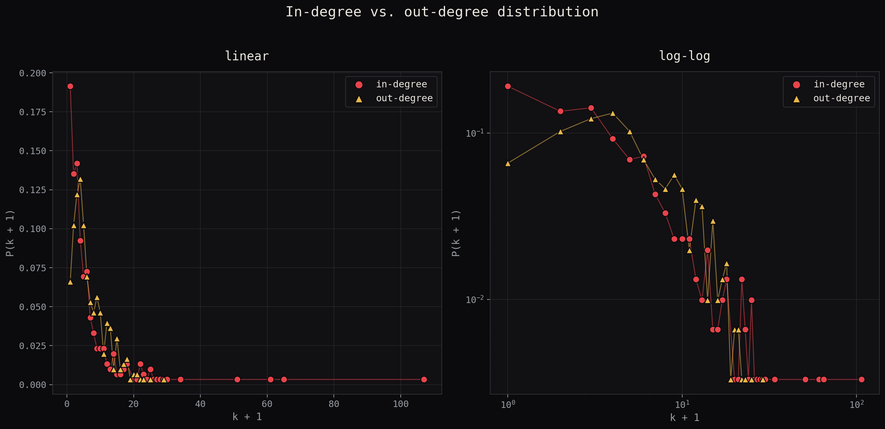
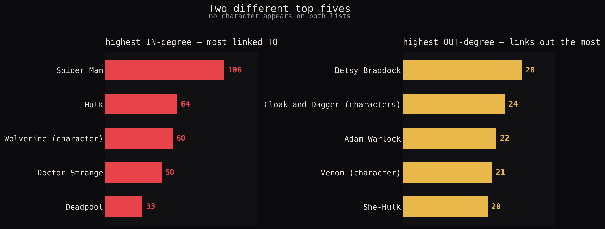

303total characters
277giant component
9sealed-off island
17fully unlinked
01Degree distributions
In-degree and out-degree, plotted against k + 1 so the unlinked
characters (degree 0) don't just vanish off a logarithmic axis.


Strikeforce: Morituri — an island, in passing
Backhand · Blackthorn · Radian · Scaredycat · Scatterbrain · Shear · Snapdragon · Toxyn · Vyking
9 characters, 0 links to the other 294. Fitting, for a team whose entire premise is dying within a year of getting their powers — cut off from the rest of the universe in the data, too.
02The alone
These 17 have no incoming links and no outgoing links at all. Three are flagged — not obscure, just isolated for a reason the graph itself can't show.
Baymax — Disney/Pixar film
Miracleman (character) — rights dispute
Yo-Yo Rodriguez — Agents of S.H.I.E.L.D.
Bird-Brain (Marvel Comics)
Black Fox (Robert Paine)
Brain Drain (character)
Breeze Barton
Captain Midlands
Charcoal (comics)
Father Time (Marvel Comics)
Happy Sam Sawyer
Hellfire (J. T. Slade)
Illuminator (Marvel Comics)
Ogre (Marvel Comics)
Sean and Chris
Solarman
Super Rabbit